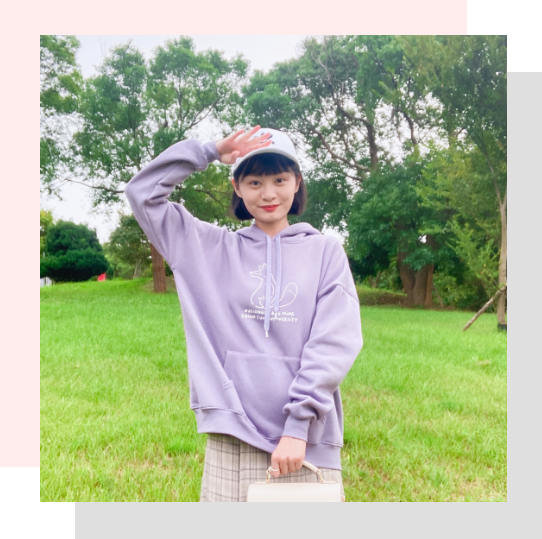

Ching-wen Chiu
邱靖雯


我是邱靖雯，畢業於交大傳播與科技學系，
平時喜歡拍影片、平面攝影、看劇
專長有影音拍攝、剪輯、社群經營等！
最喜歡雕塑家羅丹說過的一句話：
「世界不缺少美，而是缺少發現。」
期盼自己無論走到何處，
都能發現美麗的人事物！

學歷

2018-2022.06
國立陽明交通大學傳播與科技學系
2015-2018
國立新竹女子高級中學2012-2015
苗栗縣立竹南國民中學2006-2012
苗栗縣竹南鎮海口國民小學工作
經歷
2023.07.05
活動紀錄
工作內容：平面攝影（作品連結）
2022.09-至今
攝影助理
工作內容：發想企劃、頻道管理、攝影、剪輯
2022.08-至今
YouTuber剪輯師
工作內容：剪輯頻道影片（作品連結）
2022.02-至今
YouTuber剪輯師
工作內容：剪輯頻道影片（作品連結）
2022.03-2022.08.05
ASUS智慧教育T大使（實習）
工作內容：行銷影片發想、製作（作品連結）
2021.07-2021.09
影音剪輯人員（短期接案）
工作內容：影片剪輯（作品連結）
2020.06-2020.12
校園大使
工作內容：社群分享
（作品連結）
、發想行銷專案（作品連結）
活動
經歷
2021.02-2021.05
交大《喀報》記者
2020.09-2020.12
交大《喀報》品牌行銷公關
此期間對外我們規劃了與Dcard、
MyGoPen、善耕、他校傳播科系的合作企劃；
對內規劃了喀報專屬折扣碼、
擺攤發放喀報籤等活動！
2020.07.31
第六屆台灣青年黑客松
技能
平面設計

影音編輯

網頁設計


影音編輯
網頁設計